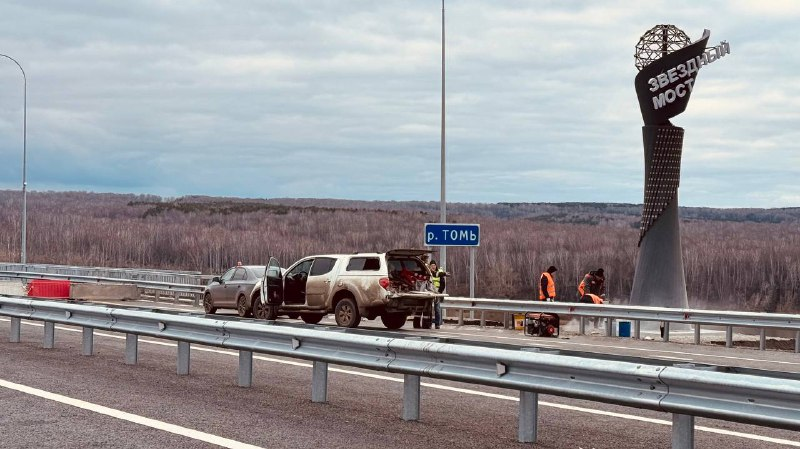
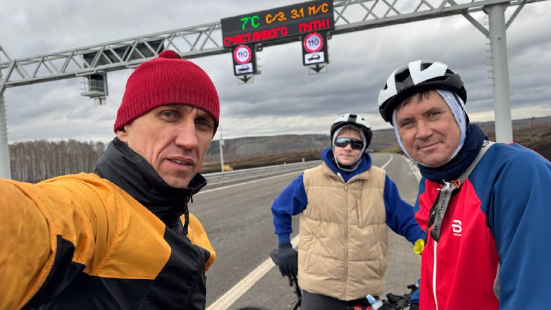
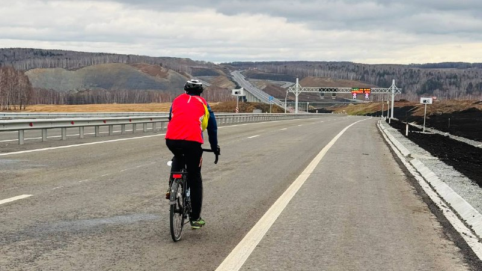
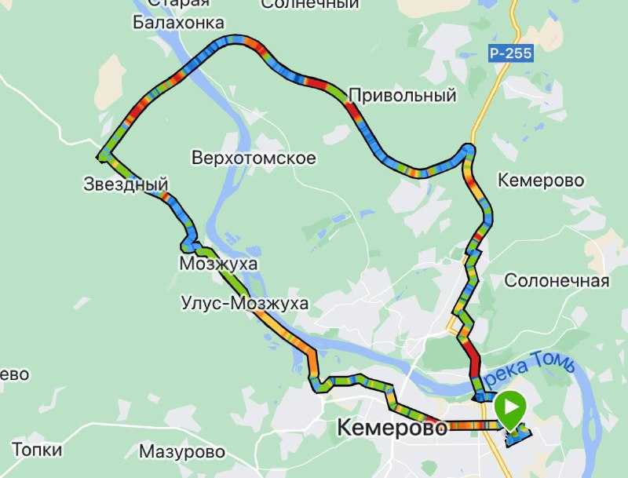

Андрей в пятницу пристал как банный лист: поехали прокатимся по новому мосту через Томь, в Звёздном, и всё тут. В воскресенье, мол, мост могут открыть в честь Дня автомобилиста, и проехать по новой дороге без машин шанса уже не будет.
Вчера у меня было плавание и спортзал, поэтому сегодня с утра было лень. Но между действием и бездействием я стараюсь выбирать действие. Съездили.
Дорога классная, почти готова. Транзитный транспорт будет экономить часа два. Строители сдать дорогу, кажется, не успевают. Оттого немного нервные, один нас шибко хотел прогнать.
Проехали 77 километров, не торопясь, сначала через Мозжуху до Звёздного, потом через развязку направо на новый мост, потому в сторону выезда на Мариинск. Планировали уйти с обхода на дорогу Боровой-Кедровка, но развязку там не стали строить, а поднимать велосипеды по грязному полю не хотелось. Поэтому доехали до конца обхода.
Я уже ездил по этой дороге прошлым летом, тогда не было построено ещё ни одного моста. Сейчас уже всё готово. Мостов несколько. Есть даже два экодука, моста для перехода животных.
Из-за близости к городу дорога будет пользоваться популярностью и у любителей «просто прокатиться» на машине или на мотоцикле. На велосипеде, кстати, по ней ездить будет нельзя.



